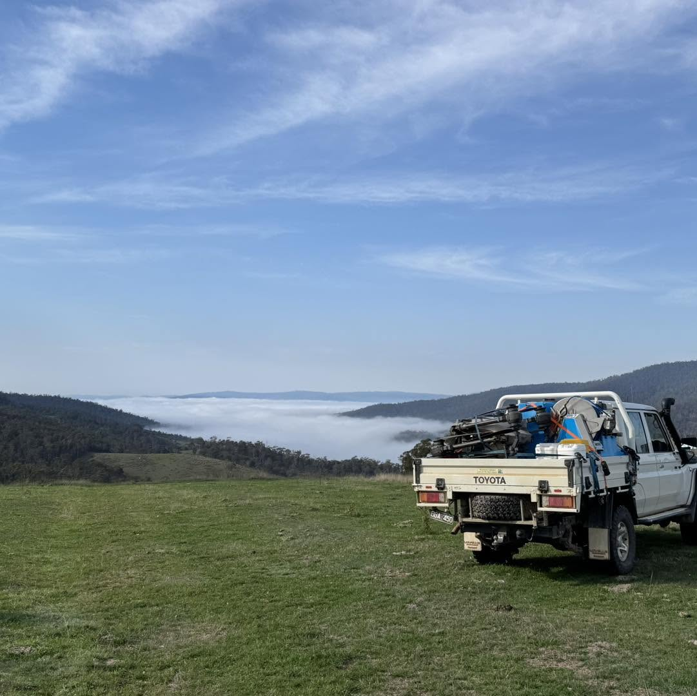

Service 07
Project verification & reporting
A clear, dated record of work completed, conditions on site and measured progress.

What we do
Built for real operating conditions
Every project can be supported by practical reporting that records what work was completed, where it occurred and the conditions at the time.
Mapped evidence, imagery and operational records help clients review delivery, communicate progress and retain a consistent project history.

07 / 07
Verification capability
- Treatment maps
- Flight records
- Weather records
- Chemical application records
- Before and after imagery
- Progress reporting
- GIS data
- Client-ready verification reports
Where it fits
Common project uses
-
Treatment evidence
Record where application work occurred, along with flight, weather and chemical records.
-
Progress records
Use repeat imagery and GIS data to show work completed and change across a site.
-
Client reporting
Package field records into a clear report for project teams and stakeholders.